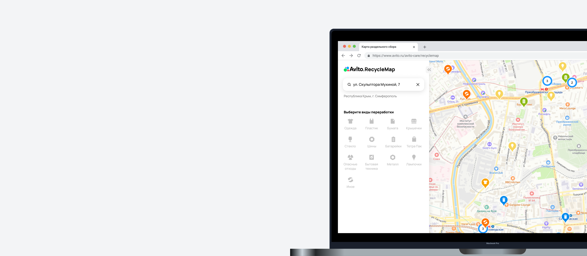
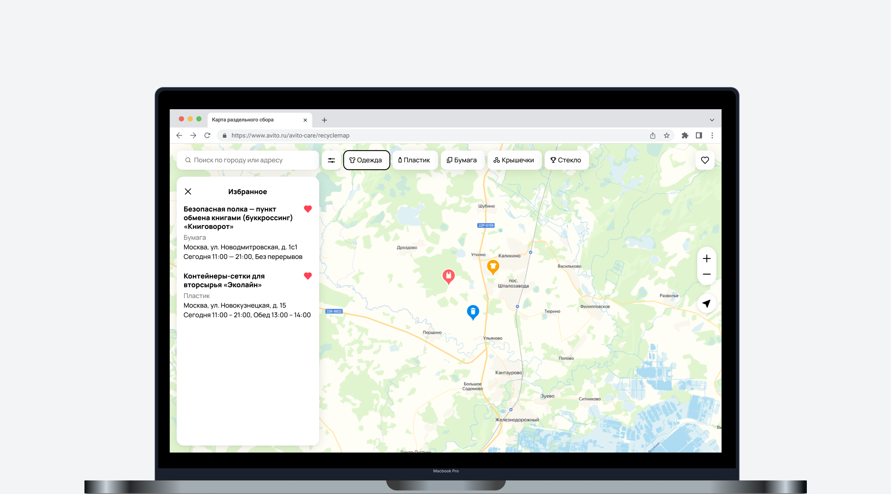
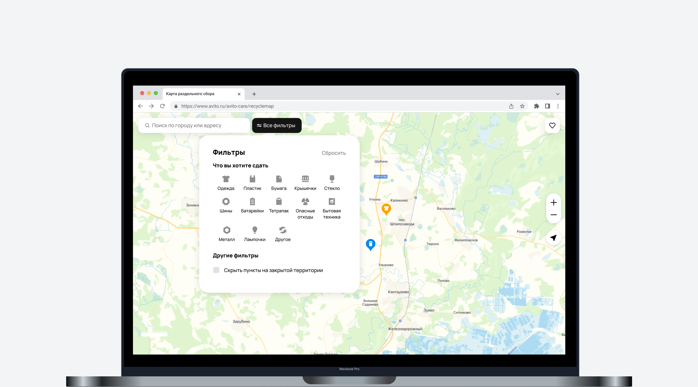
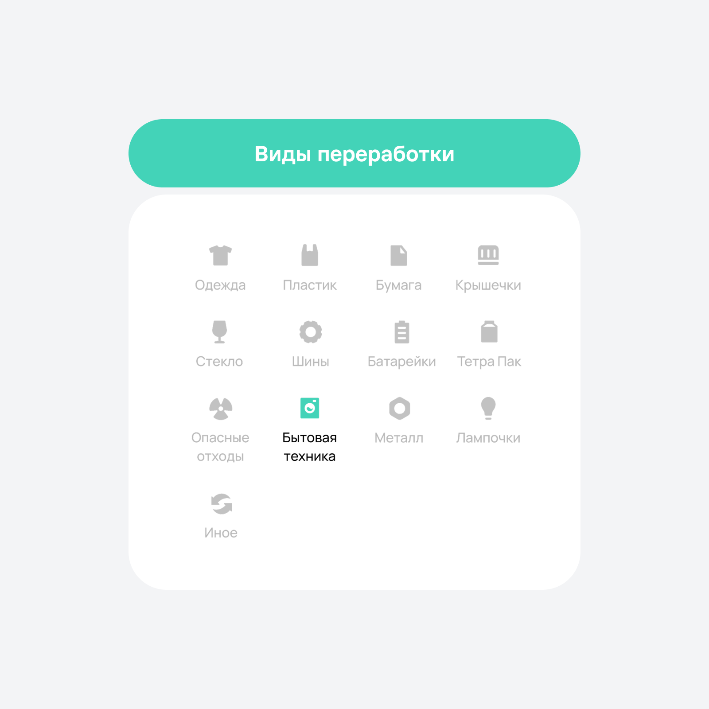
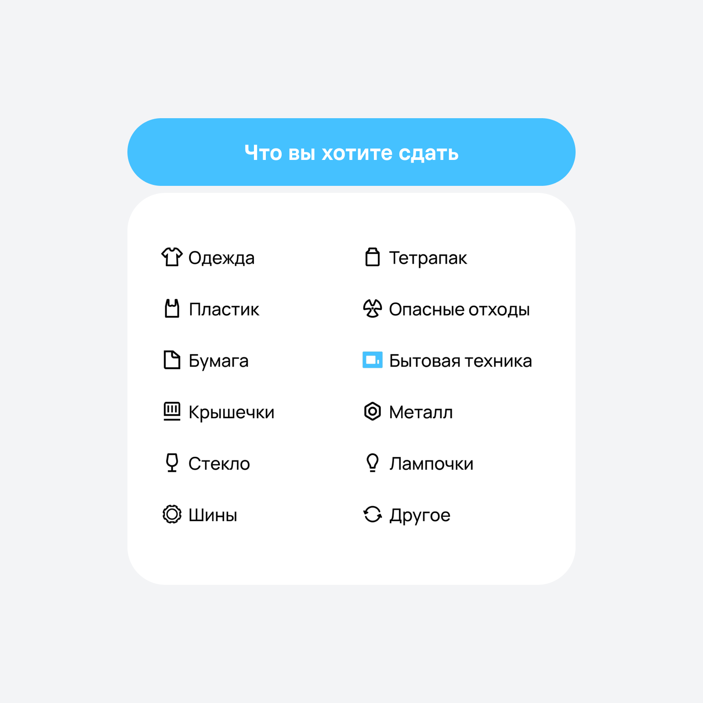
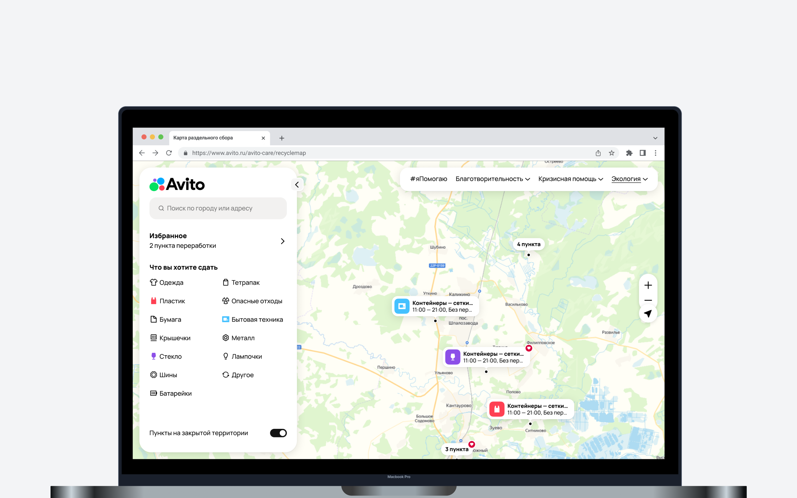
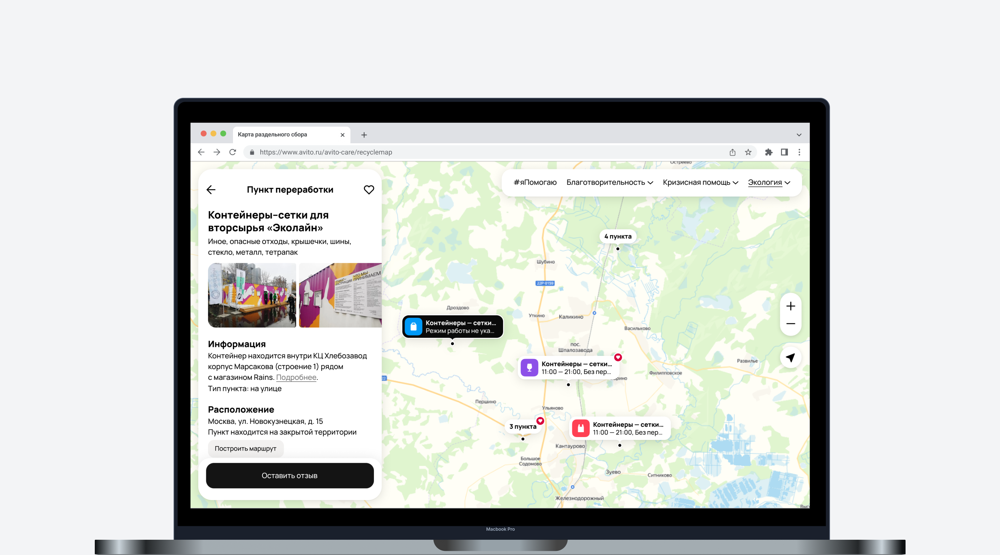
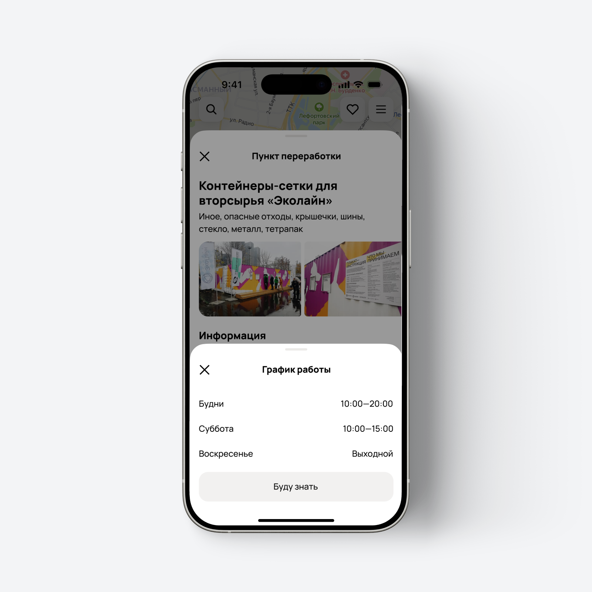
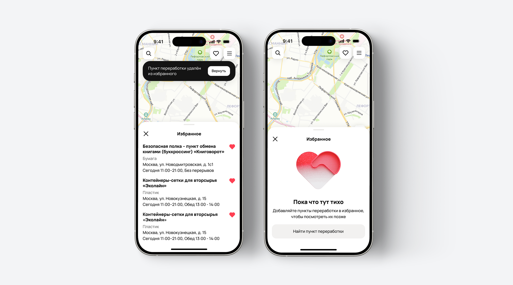

Recycling map
Problem: people found a drop-off point and left. The filters looked disabled, there was no way to save a point, and nothing led back to other initiatives.
Solution: I rebuilt the search, filters and point card, and added favourites and shared charity navigation

About the project
The map helps people find where to drop off recyclables and items for charity; the points on it come from partner organisations
The product manager’s goal was to stop losing people on the map. Success meant people returning to the map and moving on to other charity initiatives, but we could only measure returns
Thousands of addresses with descriptions of varying quality. We couldn’t edit the descriptions on our side, so only the interface could be improved

Problems
The flow broke in three places
The map wasn’t connected to the rest of the charity section: only a handful of people a day moved on to other initiatives
In their original form the filters looked disabled, and people wrote to support saying the filters didn’t work, even though they were clickable
There was no way to save a point you’d found. Weeks pass between visits, so people searched all over again
Concepts
I compared two layouts and chose to show all filters at once: almost everyone needs the waste-type filter, and an extra click would hurt the main flow. Along the way I checked how the design system components behave in each option.


Search and filters
The filter icons are grey and look disabled. People wrote to support saying the filters didn’t work.


I brought the categories and pins in line with the Avito design system. It had no category pins or multi-select filter, so I designed them and added them to the system.

Point card and favourites
The address, drop-off terms, opening hours and contacts all had the same weight in the card, so it took a while to tell whether a point was right. There was no way to save it.

Regrouped the card around tasks: where it is, what they accept, when it’s open, how to get in touch.
Unified typography, links and states. Designed saving a point and the favourites list.
Expanded the opening hours into a detailed schedule: inaccurate hours are the most common reason for a wasted trip.

Why favourites are a separate list
I considered a “saved” flag inside the card: cheaper, and no new entity. I chose a separate list.

A flag marks a point but doesn’t help you get back to it: someone who drops things off once a month doesn’t remember where the point is on the map. They need a place to come back to, not a marker. The list cost more, but without it the return flow didn’t work.
Only data can validate this choice, so it’s first on the measurement plan.
Results
We rolled it out to everyone at once, without an A/B test, so I can’t credit all of the map’s traffic to the redesign. The data shows:
306K
Point loads a day
1.5–3K
Point card opens a day
Up to 70
Points saved to favourites a day
These numbers say the map is used regularly, not just once. They don’t say this is down to the redesign: that would need a measurement we didn’t have.
What I’m testing next
How long it takes to find a suitable point. If it’s slow even with filters, the bottleneck isn’t the interface but the quality of partner data, and that’s what needs work, not the screen.
How often saved points get opened. If it’s less than once a month, favourites work as a “just in case” bookmark, and a reminder would make more sense than a list.
Which filters most often lead to opening a card and getting directions. Rarely used filters will be candidates for removal: a short list of filters usually works better than a complete one.